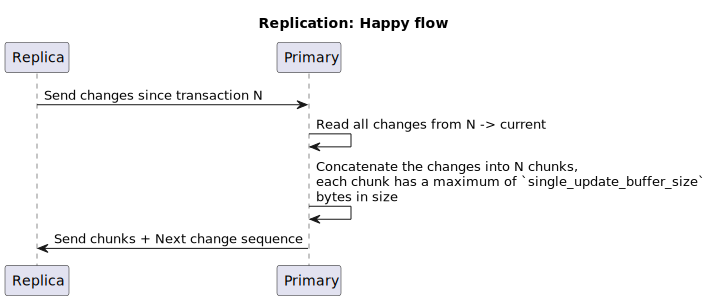
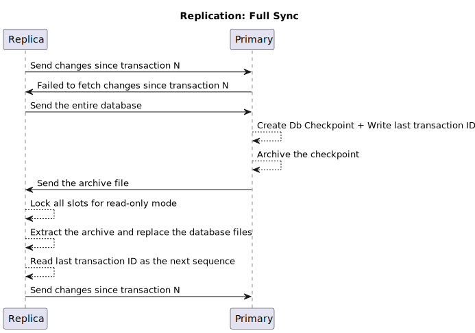

Replication
Overview
SableDB supports a 1 : N replication (single primary -> multiple replicas) configuration.
Replication Client / Server model
On startup, SableDB spawns a thread (internally called Relicator) which is listening on the main port + 1000.
So if, for example, the server is configured to listen on port 6379, the replication port is set to 7379
For every new incoming replication client, a new thread is spawned to serve it.
The replication is done using the following methodology:
- The replica is requesting from the primary a set of changes starting from a given ID (initially, it starts with
0) - If this is the first request sent from the Replica -> Primary, the primary replies with an error and set the reason to
FullSyncNotDone - The replica replies with a
FullSyncrequest to which the primary sends the complete data store - From this point on, the replica sends the
GetChangesrequest and applies them locally. Any error that might occur on the any side (Replica or Primary) triggers aFullSyncrequest - Step 4 is repeated indefinitely, on any error - the shard falls back to
FullSync
Note
Its worth mentioning that the primary server is stateless i.e. it does not keep track of its replicas. It is up to the replica server to pull data from the primary and to keep track of the next change sequence ID to pull.
Note
In case there are no changes to send to the replica, the primary delays the as dictated by the configuration file
In depth overview of the GetChanges & FullSync requests
Internally, SableDB utilizes RocksDB APIs: create_checkpoint and get_updates_since
In addition to the above APIs, SableDB maintains a file named changes.seq inside the database folder of the replica server
which holds the next transaction ID that should be pulled from the primary.
In any case of error, the replica switches to FullSync request.
The below sequence of events describes the data flow between the replica and the primary:

When a FullSync is needed, the flow changes to this:

Replication client
In addition to the above, the replication instance of SableDB is running in read-only mode. i.e. it does not allow
execution of any command marked as Write